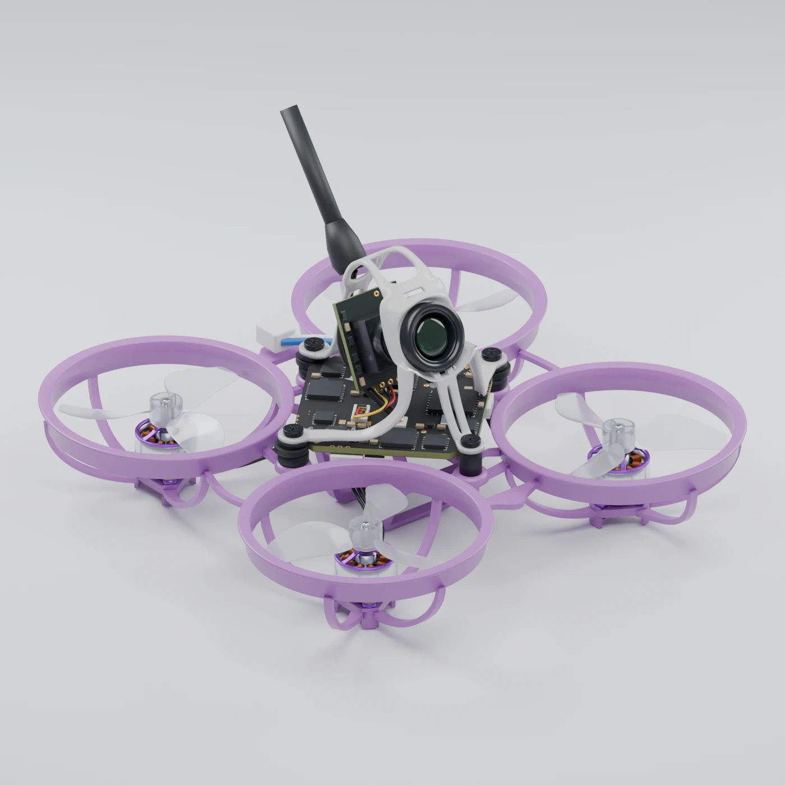

3D EXPLORER
Built with Codex and Blender from published dimensions and reference photos.
Perspective view

Drag to rotate · Scroll to zoom · Right-drag to panOne finger to rotate · Pinch to zoom
This Air65 II was built with Codex and Blender to test how closely a model could match the drone using BETAFPV’s specs and reference photos.
The dimensions above follow published specs. The canopy shape, installed component positions, blade profiles and small electronic details include estimates from photos. The battery is shown unplugged.
The Blender files and modelling code are on GitHub. The validation report records the measurements and estimates.
Separating parts adds gaps for inspection. The browser model is simplified for faster loading, and its lighting and transparent materials can look different from the Blender renders.
The RPM limit comes from BETAFPV’s bench data. High-speed blur is approximate. Slow motion plays at 1/500 speed, and the airframe stays fixed. Wireframe pauses the motors.
Studio renders and animationCode and Blender files ↗Measurements and validation ↗BETAFPV’s Air65 II specs ↗Browser model data